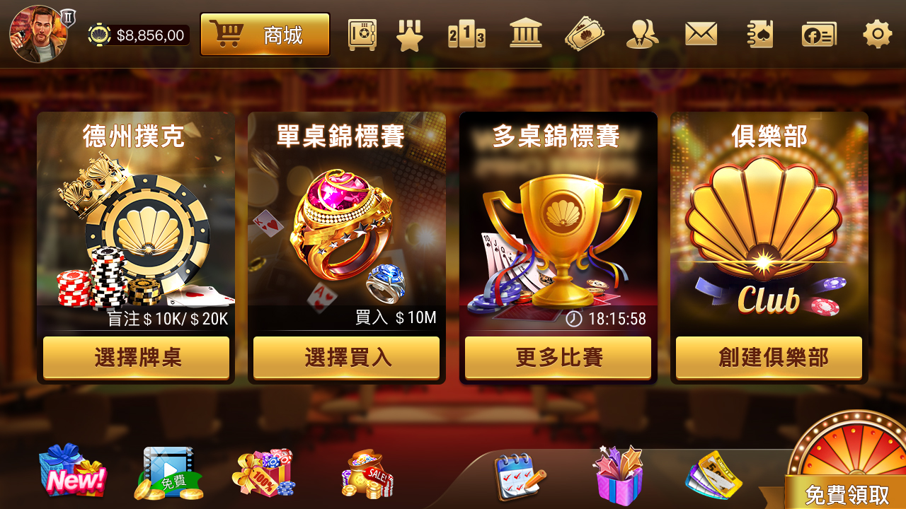
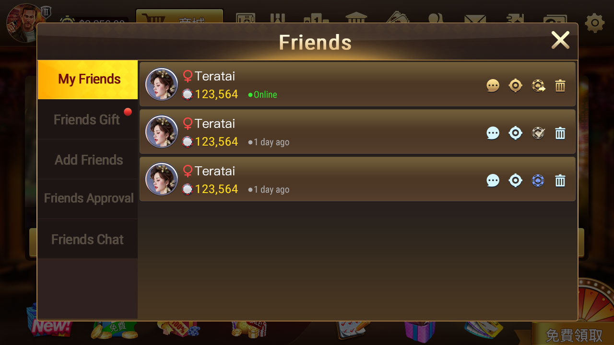
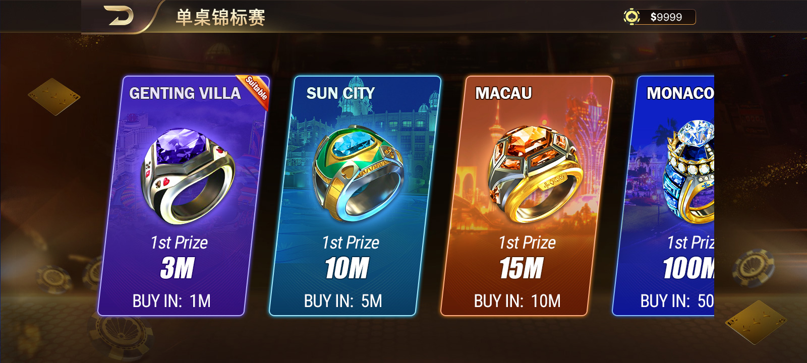
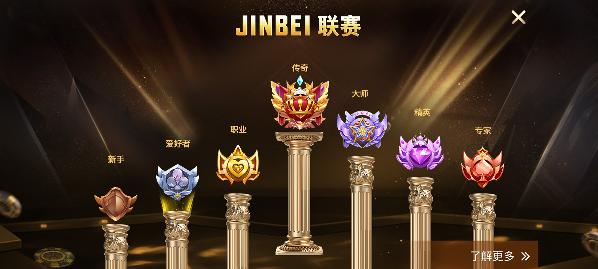
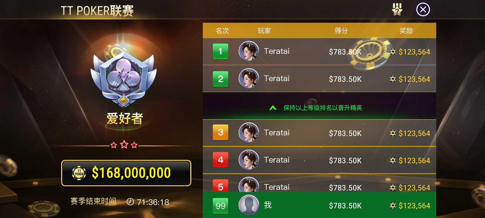
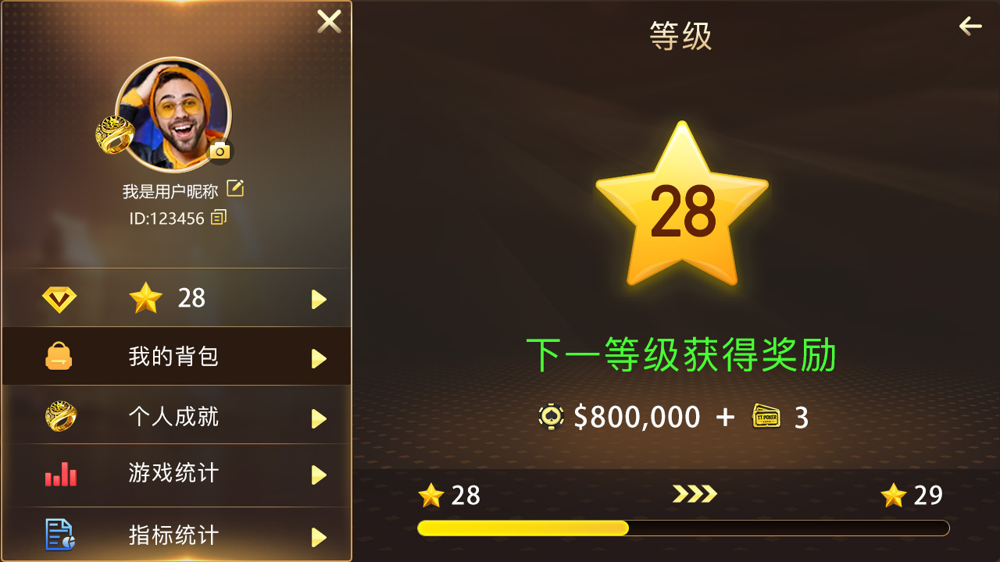

Mobile game lobby
Quick Game, single-table tournament, multi-table tournament and club entry points.
A mobile club product centered on private games, social play, leagues and SNG, documented with real screens, Unity resources, C++ flow samples and Tars room-service interfaces.
An independent product in the same broad club-poker category as WPK/HHPoker. It is not affiliated with, authorized by or guaranteed to be compatible with those brands. Every claim below is tied to repository screenshots, code or documentation.
Quick Game, single-table tournament, multi-table tournament and club entry points.
Friend lists, requests, gifts and chat entry points for social play.
Tier progression, point rankings and reward tables.
Multiple entry levels, player counts and prize displays, plus a sequence diagram.
Levels, achievements, game statistics and profile information.
Ranking, reward chest, prize wheel and mail interfaces.
Phone, email and guest entry with sound, language and account options.
Local images, Unity packages, C++, Tars APIs and project documents.
Every image comes from this repository. Together they explain the lobby, social, event, progression and reward loops.






The experience is structured as a player journey rather than a loose screenshot gallery.
Sign in by phone, email or guest access.
Open Quick Game, SNG, MTT or a club.
Use friends, private tables, chat and gifts.
Advance through leagues, rankings, achievements and rewards.
The repository connects its product visuals to practical Unity, Tars and C++ engineering materials.
Ask about scope, completeness, demonstration options and deployment requirements.